Paper collection - GAN
The following notes are taken from different papers, please refer to the title picture with hyperlink embeded for further study.
| INDEX | CONTENT |
|---|---|
| SynSigGAN | 1st: What is it about? 2nd: How was the result? 3rd: What and how was it accomplished? |
- - - - - - - - - - - - - - - 0 1 - - - - - - - - - - - - - - -
[ B A C K ]

1st reading: What is it about?
Simple summary:
- TARGET: generate
synthetic biomedical signals - REASON: eliminates
confidentiality concernsandaccessibility problemof medical data - RESULT:
Significantly betterwithhigh correlation coefficient
Abstract:
CURRENT STATE:
- Rules for generating synthetic data are predefined;
- They require expert intervention, which limits the types and amount of synthetic data
THE PURPOSE OF THIS PAPER:
propose a novel GAN model named SynSigGAN for automating the generation of any kind of synthetic biomedical signals by:
a. Generator: bidirectional grid LSTM
b. Discriminator: CNN
Introduction:
| Artificial Intelligence in general |
AI market is exploding; AI in reality is helping in medical industry |
| Difficulties | Difficulties in data set size due to privacy; Difficulties in biomedical signals (experts needed) |
| Contribution | PREPROCESSING: (a combination of) 1. discrete wavelet transform (DWT) 2. thresholding 3. Inverse discrete wavelet transform (IDWT) PROPOSAL: SynSigGAN for any kind of biomedical signals EVALUATION: Pearson Correlation Coefficient (PCC) Root Mean Square Error (RMSE) Percent Root Mean Square Difference (PRD) Mean Absolute Error (MAE) Frechet Distance (FD) |
Conclusions:
The synthetic signals geneartaed by our proposed approach are highly correlated to the original signals and of remarkable quality
generated signals of various lengths and characteristics
evaluated the model based on MAE, RMSE, PRD and FD score.
2nd reading: How was the result?
DEEPER INTRODUCTION
AI MARKET:
It was predicted by the Internatonal Data Corporation (IDC) in the year 2019 that the worldwide market for artificial intelligence (AI), deep learning, and maching learning would reach 97.9 bilion US dollor by 2023 with a compound annual growth rate of 28.4%.
AI IN REALITY IN HEALTHCARE INDUSTRY: (better indicated in the paper)
DIFFICULTIES in data set size:
- … one of the risks involved is the vulnerability of private data that are stored in electronic health records. Patient’s privacy being a major concern of the hospitals.
- Even if the data are accessible to the researcher, the legal requirements to acquire data by ensuring proper and protected usage of the data takes a considerable amount of time.
- many owners anonymize data by detaching recognizable features, adding noise and grouping individuals or variables into broader categories. However, the re-identification of those anonymized data in the large dataset becomes extremely difficult, time consuming
SOLUTION:
Generating synthetic medical data is a solution to this problem and it is considered to be valuable when there is insufficient original data or original data are expensive.DIFFICULTIES in understanding physiological signals:
- Each biomedical signal has its own morphological characteristics, depending on the source of organ, independent traits, noise, electrode placement, and pathological events.
- External devices also corrupt the quality of biomedical signals, with excessive noise making them unreadable.
SOLUTION:
ONE model to generate ANY KIND OF signals
DEEPER RESULT+CONCLUSION
NOTHING SPECIAL, ONLY SHOWING THE RESULTS
- RESUTLS of ECG, PPG, EEG (biomedical terminologies)
- COMPARISION in MAE, RMSE, PRD, and FD to prof the SynSigGAN working better than the others
3rd reading: What and how was it accomplished?
OVERVIEW
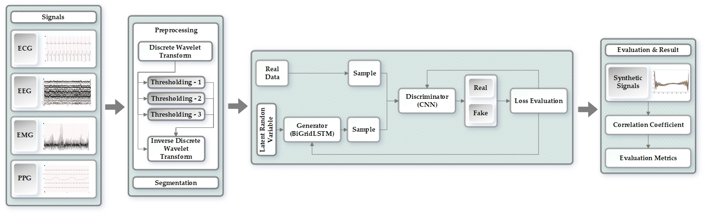
PREPROCESSING:
Elimiating noise and Refining the signals while using:
DISCRETE WAVELET TRANSFORM (DWT)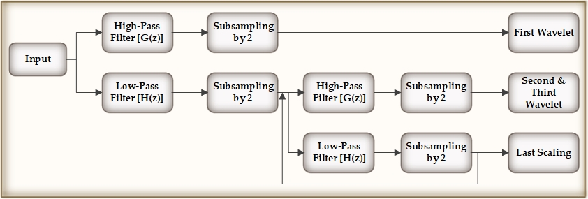
THRESHOLDING * 3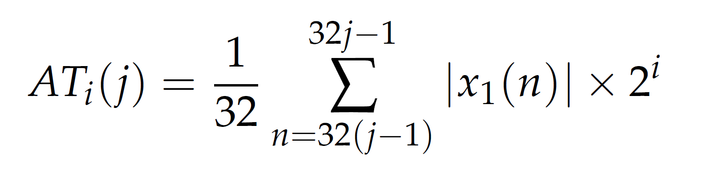 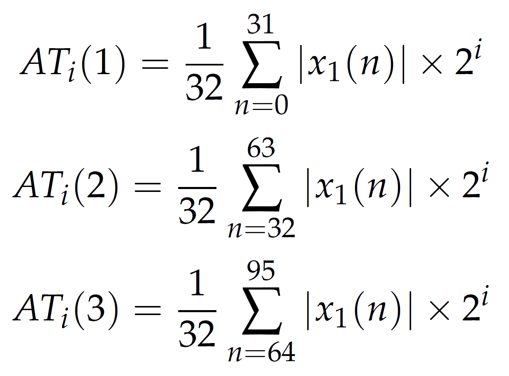 Adaptive Thresholding Process to perserve sharp features of the signal (General equation) 1. 32 is an observed choice
2. threshold value rises by a factor of 2INVERSE DISCRETE WAVELET TRANSFORM (IDWT)3.1 The difference between DWT and IDWT:
the IDWT generates the denoised signals by determining the inverse DWT of the wavelet coefficients that has been thresholded.
3.2 BUT why wavelet transform method?
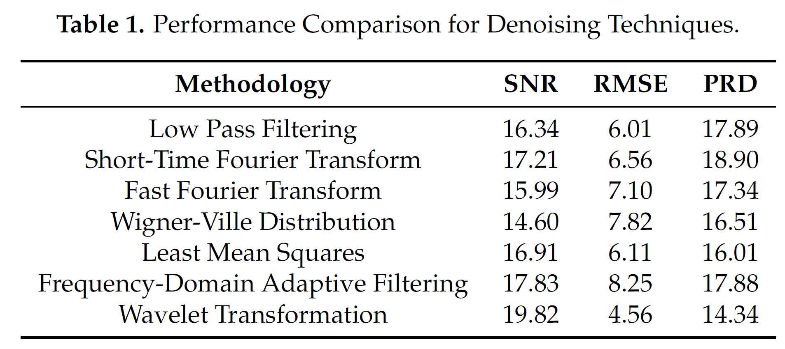
SEGMENTATION
Clustering the signal according the annotations, using the Z-score to solve amplitude scaling problem and elimiate offset
SynSigGAN
Generator: Bidirectional Grid LSTM
Grid LSTM
LSTM along 2 dimension:TIMEandDEPTHblocks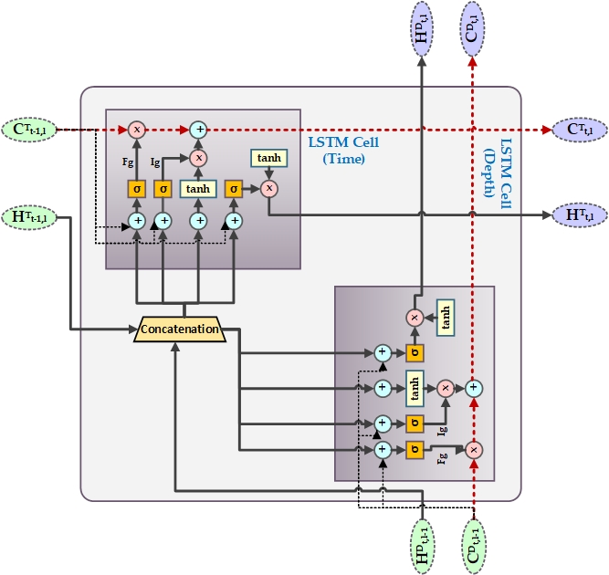
Along every dimension, the GridLSTM is linearly related to the gates among all the adjacent cells, eliminating the vanishing gradient problem along each dimension.
Bidirectional Grid LSTM
GridLSTM with a bidirectional architecture: a combination of a double GridLSTM in opposite directions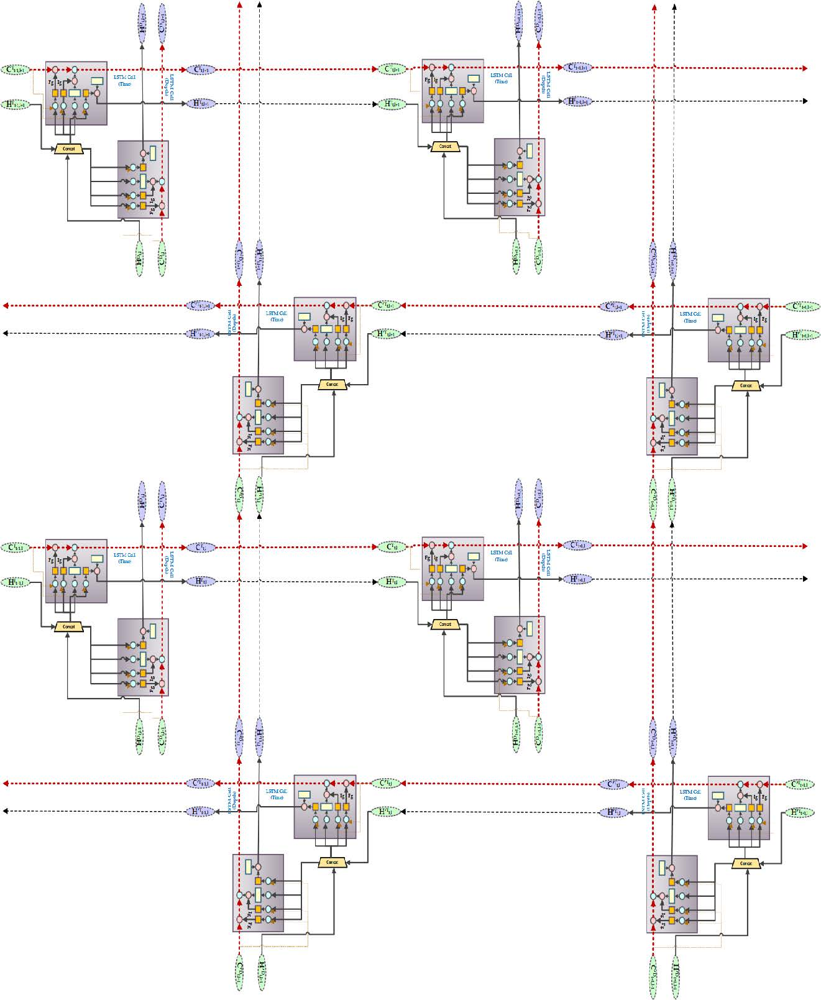
- The BiGridLSTM has the advantage of diminishing the gradient phenomenon from two dimensions and obtaining the context information at the same time frame.
- It has also proved to produce excellent outcomes in time sequence problems.
Discriminator: CNN
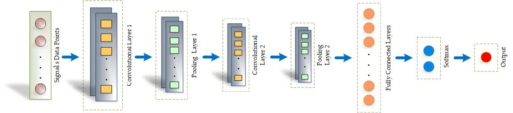
EVALUATION:
| Evaluation | Equation | Why |
|---|---|---|
| ROOT MEAN SQUARE ERROR (RMSE) | 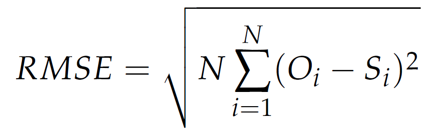 | measure the satbility |
| PERCENT ROOT MEAN SQUARE DIFFERENCE (PRD) | 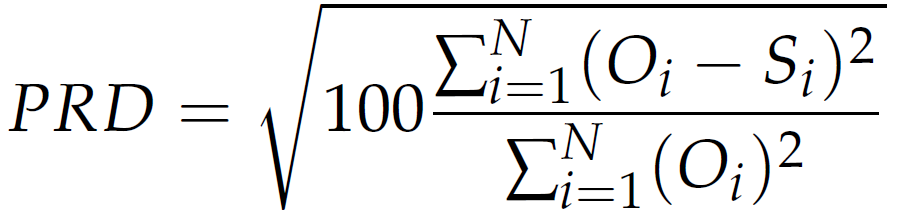 | calculate the distortion |
| MEAN ABSOLUTE ERROR (MAE) | 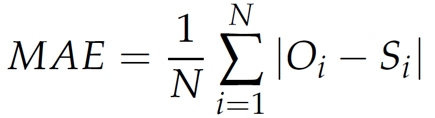 | average of the absolute differecens |
| FRECHET DISTANCE (FD) | 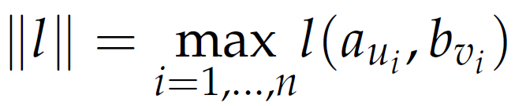 |
find the similarity of two curve |
| PEARSON’S CORRELATION COEFFICIENT (PCC) | 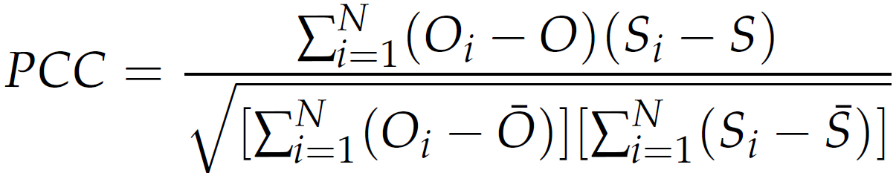 | how much is the correlation level |
Performance and Comparison:
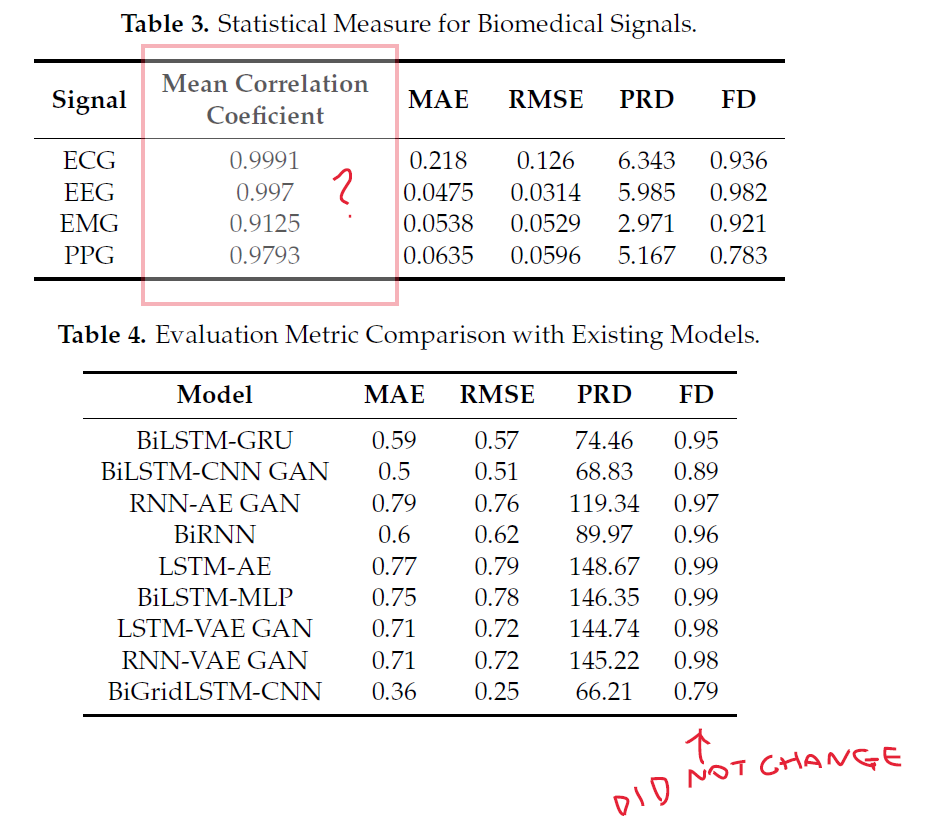
Question:
Why and how the Mean Correlation Coefficient is calculated?
Why the FD is almost the same?
PERSONAL COMMENTS
WHY IS BETTER?
It DID solve the problem by the approaches that the author tried to propose.
But it did NOT explain the reason why it could perform better than the other algorithms.Is it because of the PREPROCESSING by DWT?
Or the BiGridLSTM as the generator?
Or CNN as the discriminator?
Or all of them? Or some combination among them?COULD IT BE USED IN OTHER INDUSTRIES?
The reason I read this article is because while me and a PhD candidate tried to work in chiller or heat pump prediction, we found the data is not enough for different reasons.
Although this article was proposing the SynSigGAN for medical area, the possiblity for data augmentation to apply it on BEM or BS aspect could not be negligible. So could the method be implemented in other area?